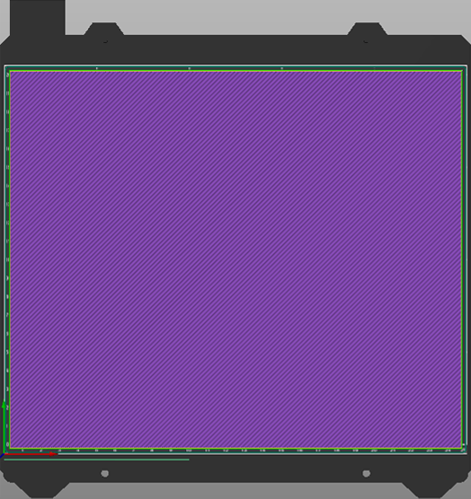
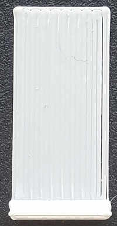
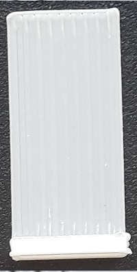
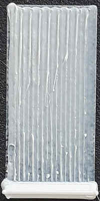

Kalibrierung der ersten Schicht (Fläche) |
||
|
Mit diesem Kalibrierungstest können Sie die Ebenheit des gesamten Bettes überprüfen.
Wie es funktioniert
Wählen Sie zunächst Ihren Drucker und Ihr Standarddruckprofil mit dem Filamentprofil für das Filament aus, das Sie haben. Beachten Sie, dass diese Kalibrierung nur mit Ihrem ersten Extruder funktioniert, wenn Sie mehrere haben.
Der Slicer generiert einen Patch (60% - 100%) der Bettgröße.
 |
 |  |
|||||||||||
 |
 |
 |  |  |  |
 |
| Zu weit weg | Zu weit | Zu weit: Man erkennt eine kleine Lücke |
Perfekt | Zu nah | Achtung! Es ist zu nah: Überprüfen Sie die Dicke mit Ihren Fingern! |
Viel zu nah Gefährlich für das Bett |
So optimieren Sie Ihren Drucker
Wenn Ihr Drucker über Bettschrauben verfügt, verwenden Sie diese, um das Bett entsprechend dem Bereich anzuheben oder abzusenken, der angepasst werden muss. Vergessen Sie nicht, den Test nach der Anpassung erneut auszudrucken, um die Kompensation zu überprüfen. Seien Sie vorsichtig, denn in den meisten Fällen entspricht eine halbe Umdrehung einer Höhenverstellung von 0.2 mm, was normalerweise der Höhe der ersten Schicht entspricht. Wenn Sie das Bett anheben, drehen Sie es niemals weiter und verstellen Sie es in der Regel höchstens um eine Vierteldrehung.
Wenn es keine Bettschrauben hat, müssen Sie die Software verwenden oder die Firmware-Konfiguration ändern. Weitere Informationen finden Sie im Handbuch Ihres Druckers.
Ratschläge
Wenn es Ihrem Filament schwerfällt, am Bett zu haften, können Sie Folgendes versuchen:
- Erhöhen Sie die Breite der ersten Schicht, um den Quetschdruck (Druck) ohne Überextrusion zu erhöhen. Sie können eine Düsenbreite von bis zu 200% erreichen, aber 150% sollten ausreichen. (Erweiterte Einstellung, Drucken -> Breite)
- Reduzieren Sie die Druckgeschwindigkeit der ersten Schicht, damit sie Zeit zum Kleben hat. (Erweiterte Einstellung, Drucken -> Geschwindigkeit)
- Sie können Z-Hop für die erste Ebene deaktivieren/aktivieren, indem Sie "nur Z-Lift" erhöhen-> über Z" auf einen höheren Wert als die Höhe Ihrer ersten Schicht. Wenn Sie diese Funktion aktivieren, wird das Filament möglicherweise aus dem Bett gezogen, und wenn Sie sie deaktivieren, trifft die Düse möglicherweise auf das Bett und drückt das abgelegte Filament. Sie müssen also testen, um den optimalen Wert zu finden. (Erweiterte Einstellung, Drucker -> Extruder)
Anmerkungen
Für diesen Test wird Ihre aktuelle Höhe der ersten Schicht verwendet. Möglicherweise möchten Sie diese jedoch auf bis zu 80% Ihrer Düsenhöhe erhöhen (bevor Sie "Generieren" verwenden), wenn Sie Ihr Bett zum ersten Mal nivellieren, um das Risiko zu verringern eines Düsenabsturzes.
Wenn sich nach der Filamentflusskalibrierung herausstellt, dass der Fluss sehr falsch war, möchten Sie diese Kalibrierung möglicherweise ein anderes Mal wiederholen.
Die meisten Kalibrierungen müssen in der richtigen Reihenfolge durchgeführt werden. Dies ist der erste Schritt. Wenn Sie jedoch gute Ergebnisse erzielen möchten, müssen Sie Ihren Extruder kalibrieren, z. B.: Wenn Sie ihn auffordern, 100mm Filament zu extrudieren, ist das genau die Länge des Filaments, die der Extruder benötigt, um in die Düse zu drücken.